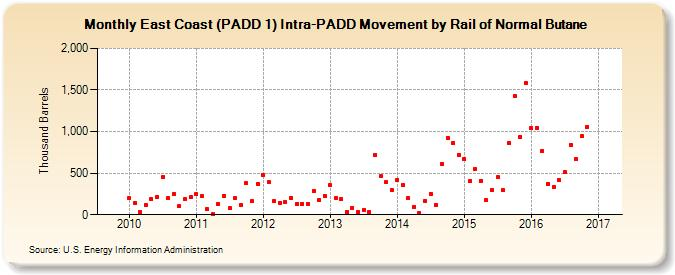

|
Download Data (XLS File) |
|
||||||||
|  | ||||||||
| East Coast (PADD 1) Intra-PADD Movement by Rail of Normal Butane (Thousand Barrels) | ||||||||
| Year | Jan | Feb | Mar | Apr | May | Jun | Jul | Aug | Sep | Oct | Nov | Dec |
|---|---|---|---|---|---|---|---|---|---|---|---|---|
| 2010 | 202 | 143 | 29 | 122 | 184 | 214 | 450 | 196 | 250 | 102 | 185 | 212 |
| 2011 | 249 | 221 | 67 | 7 | 127 | 227 | 79 | 195 | 111 | 378 | 160 | 374 |
| 2012 | 477 | 389 | 160 | 146 | 152 | 205 | 128 | 133 | 133 | 286 | 179 | 228 |
| 2013 | 356 | 206 | 183 | 35 | 83 | 30 | 57 | 29 | 721 | 462 | 390 | 294 |
| 2014 | 417 | 355 | 195 | 98 | 26 | 168 | 255 | 118 | 613 | 924 | 863 | 722 |
| 2015 | 669 | 403 | 548 | 409 | 176 | 300 | 449 | 292 | 868 | 1,426 | 937 | 1,586 |
| 2016 | 1,038 | 1,047 | 766 | 374 | 336 | 416 | 508 | 843 | 666 | 945 | 1,059 | |
| - = No Data Reported; -- = Not Applicable; NA = Not Available; W = Withheld to avoid disclosure of individual company data. |
| Release Date: 1/31/2017 |
| Next Release Date: 2/28/2017 |